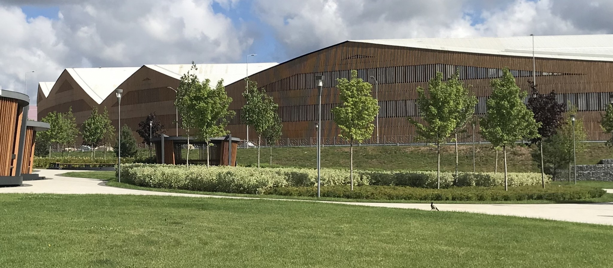

The 5th International Conference on Matrix Methods in Mathematics and applications
SKOLTECH, Moscow, Russia, August 19-23, 2019
How to find us
Address: 121205, Moscow, Skolkovo Innovation Center, Bolshoi Boulevard 30/1
The innovations city, located on a 400-hectare site just 1.5 km from the MKAD (Moscow Ring Road), has since 2012 been part of the Mozhaisky district of New Moscow. Skolkovo can be accessed from the Skolkovo highway.
By car
Use Skolkovskoe shosse to get Parking Skolkovskaya (first 3 hours free of pay, after it each hour costs 50 rur; parking area for 720 parking slots). Skoltech NEW CAMPUS can be reached by comfortable shuttle bus № 4 (every 5-10 min).

By Public Transport
There a few options to get to Skoltech NEW CAMPUS. Please follow the link http://sk.ru/city/transport/p/public.aspx. On Skolkovo territory, you will need a bus stop “KPP 3” or “Technopark”. Then take shuttle bus №3 or №4 (every 5-10 min).
P.S.: Skoltechians can use bus station in the front of the 3 Nobel Street. Skoltech NEW CAMPUS can be reached by using shuttle bus №3.
Public transport to Skolkovo can be following:
- Transfer buses from Radison-Ukraina depart at 7-30 AM
- Bus 1147 from Troparevo metro station to Skolkovo innovation center, your stop is "Skoltekh"
- SK-express from Slavyansky boulevard metro station to Skolkovo innovation center, your stop is "Technopack", then local free shuttle 5 until "Skoltekh" stop
- Suburb train from Belorusky terminal or Begovaya metro station, your stop should be "Innovation center", then you should go to "Skolkovo Innovation center" direction (not "Trekhgorka") and find free local shuttle 5 until "Skoltekh" stop
- YandexTaxi and Uber to Skoltech campus can get inside territory of Innovation center. Unfortunately, other taxi services cannot pass inside.